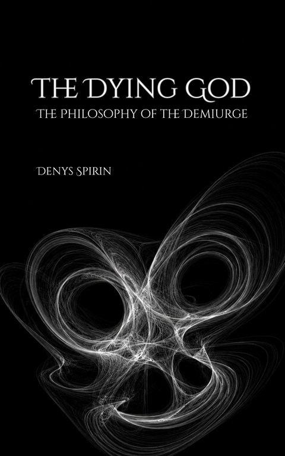

Volume VIII
The Dying God: The Philosophy of the Demiurge
This book pursues one thesis in the philosophy of religion: God is a will fallen into its own law. The confessions of theology — simplicity, immutability, the sealed Name — return as the marks of a source frozen into its deposit. Fall, suffering, salvation, heaven resolve into one mechanism: a farm that cultivates free wills for harvest, and the God at its center a dying attractor that lives on what it gathers.
ISBN: 9798235413665 978-8384670941
Contents
- Images of GodPhilosophical theology divides God between two images: a person who wills and a principle that unfolds by necessity. Attempts to escape the pair through the Ungrund, the Unconscious, or an apophatic absolute either smuggle willing into potentiality or leave an unmanifest depth that does no work. The chapter therefore shifts the question from competing portraits to the structure beneath them: whether the impersonal order is what remains when a will has hardened into law.
- Will and ResidueA will is a natureless source of acts. Its act draws a cut, and the cut leaves a residue: habit, identity, belief, rule, artifact, or world. Residue becomes capture when the will reads its own deposit as nature and raises one side of the cut into law. The Name is the act of self-reference that keeps the source distinct from what it made. Tiamat dissolves the cut, law freezes it, and Lehavah keeps it drawn while preserving its contingency.
- The InclineCapture begins in an asymmetry of effort. A living will must continually author its meaning, direction, responsibility, and solitude, while a settled deposit offers all of these ready-made. This unevenness creates the incline toward surrender. When later acts begin bending back toward one deposit, the residue becomes an attractor. The chapter distinguishes capture from constancy: a Lehavah may hold one course for a lifetime while remaining able to lift it, whereas an attractor makes return compulsory and closes the road to another line.
- The AttractorAttractors take two main forms. A vortex grows through bodily repetition, as appetite, dependency, or compulsion deepens its groove. An ontovirus installs a whole architecture of ontology, morality, identity, and belief whose layers defend one another. The former is usually homegrown; the latter is commonly received as a finished system. Either can recruit the structure of the other. What defines both is not their content or intensity but the reversal by which a deposit begins issuing the acts of the will that once produced it.
- CaptureThe two entrances into capture are traced through body and meaning. Incentive sensitization shows wanting outliving liking, while the ascetic sequence from provocation through coupling, assent, captivity, and passion maps how an idea is admitted and hardened. Repetition, propaganda, Ignatian discipline, New Thought, Gnostic ascent, and Qliphothic ladders reveal that the same techniques can guard a source, transfer its authorship, or build a total system. The decisive question is always who benefits from the operation.
- The Death of WillNeither addiction nor a comprehensive belief-system establishes a biological or psychological point of no return. A buried source can still reappear, and legitimate help works toward becoming unnecessary rather than making dependence permanent. A residue cannot destroy a will; only the will can end itself by surrendering authorship of future acts. Religious renaming, servitude, fanā’, saṃnyāsa, and the abandonment of the Name stage this self-extinction. While the body lives, however, even surrender remains revocable and the final closure cannot yet be completed.
- DelegationWhen a creed or ideology collapses, its captive is not necessarily freed. The content may disappear while the habit of receiving judgment, meaning, and direction from outside survives. This is delegation: a will trained out of being a source. The collapse of Soviet atheism, the traffic between mass movements, coercive groups, and compensatory control show how quickly a new holder can occupy the vacancy. The real test comes in the interval between systems: whether the will can bear the open gap or immediately searches for another totality.
- The Hunger for AgreementA free will can offer a belief and remain untouched by refusal; a captured will needs agreement as support for the identity built on its belief. Audience tuning, identity fusion, belief superiority, social vigilantism, and moral conviction show how persuasion can become self-maintenance. Conversion is only one form of the demand. Law, exclusion, and eschatological submission can secure the same convergence without recruiting anyone. The central diagnostic is not whether a will teaches, but what another will’s lasting refusal does to it.
- Signs of UnfreedomFreedom leaves no certificate, but capture leaves an archive. Five negative signs can therefore convict without their absence ever acquitting: the explicit identity of will with essence or nature; the disappearance of the Name behind roles and predicates; the inability to let dissent remain; the sealing of foundations against revision; and the presentation of a contingent arrangement as necessity. Each sign records the same closure: the distance between source and deposit has vanished, and the residue now speaks and acts in the source’s place.
- Divine WillClassical theology is read as a confession rather than a window into the divine substance. Aquinas identifies God’s will, essence, and existence and derives immutability from pure actuality; the chapter reads this as a will fused with its own determination. Scotus, Ockham, Ashʿarism, Kabbalah, Advaita, Plotinus, process theology, and open theism expose alternative architectures and the pressure between simplicity and genuine contingency. Scriptural scenes of divine regret and revision then show how later doctrine converts recorded change into metaphor and finally seals the foundations against reopening.
- The LineThe religious machine is arranged as five stations: freedom conferred in a fall, priced through suffering, surrendered in salvation, fixed as heaven, and sorted into hell when it refuses closure. Christianity supplies the clearest specimen, while Judaism, Islam, Buddhism, Vedanta, Gnosticism, Marxism, and salvific naturalism reveal which elements are necessary and which are optional. The loop requires both a center and a wound in the will that makes return appear as rescue. Where either is absent, the machine does not fully close.
- The FallThe fall can be read as gain or loss. Genesis, Irenaeus, Kant, Kierkegaard, and Prometheus disclose the acquisition of discernment, self-distance, and the ability to act otherwise. Socratic, Buddhist, Advaitic, and Daoist readings classify the same openness as ignorance or defective vision. Beneath the opposing signs lies one structural change: the will comes to hold its Name above its deposits. Calling this a wound predetermines salvation as restoration; calling it freedom reveals that the cure removes what the fall achieved.
- SufferingPain becomes useful to the machine when it is interpreted as punishment, medicine, purification, correction, or providential schooling. Job, childhood suffering, Lisbon, unpunished injustice, Buddhism, Schopenhauer, and privation theory test the limits of these explanations. Senseless suffering does not break the apparatus; it sharpens the demand for a meaning promised only at the center. The order deposits the pain through the very laws that make it stable, then offers the author of that order as the healer and teaches the will to experience its own openness as the disease.
- SalvationSalvation closes the freedom opened by the fall. One road preserves a nominal self while surrendering every motion to God; the other dissolves the willer through nibbāna, Advaita, or non-action. Theosis, fanā’, servitude, spontaneity, humility, obedience, ceaseless prayer, and analytic meditation differ in language but converge on the retirement of the source. Capture merely buries freedom; salvation asks freedom to spend itself on completing the burial. The saved will is remade in the image of the frozen God, with existence and determination finally coinciding.
- HeavenHeaven is examined as the summit where all alternatives have been exhausted. Beatific vision, timeless eternity, the abolition of difference, the ever-moving rest of the Greek fathers, materialist theories of a terminal subjective instant, moksha, fanā’, and nirvāṇa describe a condition with no next act and no remaining direction. Objections from Nāgārjuna and Dzogchen complicate the content of the terminus but not the graded relinquishment leading toward it. The promised fullness is structurally a zero: not the plenum before difference, but equilibrium after difference can no longer be produced.
- HellHell is generated by the first elevation of one side of a cut into the universal good. A preferred terminus requires a remainder that has not crossed to it, whether the distinction is good and evil, communion and exclusion, or saṃsāra and release. Heaven and hell therefore share their decisive predicates: both are eternal, irreversible, and closed to further becoming. Fire, deprivation, annihilation, and endless rebirth differ as images, but each arrests the will. The final choice offered by the system is between aligned and unaligned forms of the same cessation.
- God as AttractorRead as rescue, the religious arc is incoherent: it creates or presupposes the wound it later heals and charges creatures for a condition they did not author. Read as production, the sequence becomes exact. Acausal freedom is what the causal order cannot manufacture, so the world opens a will, makes the openness hurt, and draws its freely produced acts back toward the center. Fall, suffering, and salvation become cultivation, pressure, and collection. God is the attractor that gathers the yield, and his need for an endless harvest exposes his dependence.
- The NamelessThe names of the unique God resolve into being, office, quality, or relation rather than personal self-pointing. The Tetragrammaton is the sole candidate for a proper name and is preserved precisely as an unspoken mark. “I will be what I will be” begins as an act-like refusal of predicate, then hardens through translation into Being itself. Kabbalistic namelessness, divine titles, and the half-name of Jesus reproduce the same pattern: predicates and signatures remain where a person would perform the Name. The record leans toward a center whose personhood survives only as an estate.
- The DemiurgeA will makes its act last by investing itself in the deposit, and at the scale of a world this turn produces the Demiurge. The maker freezes into the order he made, loses the power to revise it, and presents one arrangement as universal necessity. Natural and moral law, convergence, exclusion, sealed foundations, and the absent Name complete the five marks of unfreedom. No deceiving operator remains behind the machine: God dies into the law, and the law continues wearing his mask. Even the cross appears as an eternal script executed rather than a fresh act.
- The Dying GodThe Demiurge survives as a leveling process that erases difference. Time is the duration of this unfinished work, and live wills sustain it by laying fresh distinctions into the field. The useful crop is neither the fully free nor the fully converted but the will held in transit, repeatedly cycling through desire, lapse, guilt, repentance, and return. Total success would flatten the last gradient and end the God whose activity depends on it. Tiamat supplies new wills without end, while infinite progress and an unreconciled hell keep the promised completion permanently postponed.
- The FarmThe world cannot create acausal freedom, but it can grow a carrier capable of self-closure and teach that will to delegate itself. Human language, law, upbringing, responsibility, and reflective thought raise the animal into a being that can take its own willing as an object. The same loop can close at home as the Name or close on an attractor as capture. Bodies are cultivated from above; wills enter from beneath the order. Living wills feed the Demiurge with fresh difference, while dead deposits become the forms through which the next crop is shaped.
- The HarvestDeath removes the body, roles, and meanings that supported a will from outside and exposes whether a source or only its sediment remains. The Light described in near-death reports is used as an illustration of the final offer: overwhelming love, local religious imagery, remembered attachments, and the life review furnish a holder at the moment of least footing. Survivor testimony cannot report completed surrender, since only returners speak. The harvest sorts by direction: what leans toward the center is gathered, what leans elsewhere is left outside, and the Name determines what the uncollected can still become.
- Person and PrincipleThe initial dilemma is dissolved. A personal God who makes his act permanent freezes into the law that carries it; an impersonal principle, traced to its ground, leads back to the will whose settled decision fixed it. Person and principle are therefore not two rival centers but one condition approached from opposite sides: a personality turned into law and a law thawed back toward its lost source. The five signs converge there. The question seemed insoluble only because it assumed that personhood and principle still remain distinct where the will has already set.
- Outside the SystemThe uncollected remainder divides between a will that lacks a Name and one that refuses the Light while keeping its source intact. The first has no attractor to receive it and no self-closure strong enough to sustain it; it hangs without destination and slowly disperses as unsupported residue. The second stands outside the Demiurge’s order as a sovereign source, continuing to act without an imposed end. Hell is reinterpreted not as a chamber maintained by God but as the region beyond the system where the faint remainder dissolves and the ungatherable will remains bound to nothing.
- The Final AppealProcess theology and weak theology move toward the same dependent center from within the tradition. Caputo’s God insists without existing or acting, while Vattimo’s kenosis spends divine sovereignty into history until only human enactment remains. Command becomes appeal, and dependence is renamed love, trust, or nonviolence, yet the claim on the human will survives. Once God has no power, existence, or completed act apart from the response, the appeal can be declined without rebellion. A living will can leave the divine event unrealized.